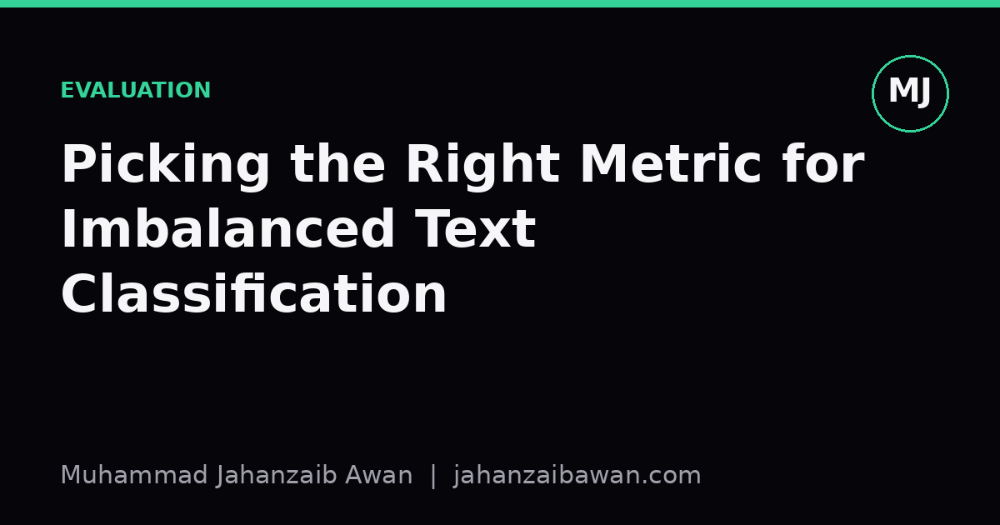

Picking the Right Metric for Imbalanced Text Classification
Accuracy lies to you when classes are imbalanced. Here is how to choose a metric that actually reflects what your classifier is doing.

Why accuracy quietly fails you
Imagine a dataset of ten thousand support tickets where you are trying to flag the ones that mention a safety issue. Only two hundred of them, two per cent, are genuinely safety related. A classifier that simply predicts 'not safety' for every single ticket will be right 98 per cent of the time. Report that number in a meeting and it sounds like a triumph. In reality the model has learned nothing; it has just exploited the fact that the rare class is rare.
This is the core problem with accuracy on imbalanced text classification: it treats every correct prediction as equally informative, but on skewed data the majority class is easy to get right by default. The metric rewards you for ignoring the thing you actually care about. I have seen this trip up otherwise careful work, not because anyone was being sloppy, but because accuracy is the first number most tooling prints out, and it is tempting to stop there.
The fix is not a single magic metric. It is understanding what question you are actually asking of your model, and then picking a metric whose arithmetic matches that question. That requires sitting with the confusion matrix for a moment rather than skipping straight to a single scalar.
Precision, recall, and the trade-off that matters
Go back to the ticket example. Suppose your model flags 150 tickets as safety related. Of those, 90 are genuinely safety issues and 60 are false alarms. Of the 200 real safety tickets, it caught 90 and missed 110. Precision, the fraction of flagged tickets that are correct, is 90 divided by 150, or 60 per cent. Recall, the fraction of real safety tickets the model actually caught, is 90 divided by 200, or 45 per cent. Accuracy, meanwhile, is still sitting above 97 per cent, because the 9750 correctly identified non-safety tickets dominate the arithmetic.
Precision and recall tell two different stories and they usually trade off against each other. Push the model to flag more tickets and recall rises because you catch more true cases, but precision falls because you also catch more false alarms. Push it to be more conservative and precision rises while recall falls. Which one matters more depends entirely on the cost of each kind of mistake. If missing a genuine safety issue is dangerous, you want high recall even at the cost of some false alarms. If investigating a false alarm wastes a lot of expensive human time, you may need higher precision even if some real cases slip through.
The F1 score, the harmonic mean of precision and recall, is a reasonable single-number compromise when you have no strong reason to favour one over the other. In the example above, F1 works out to roughly 0.51, which is a far more honest summary of model quality than the 97 per cent accuracy figure. But F1 assumes precision and recall deserve equal weight, and that is an assumption, not a law of nature. If you know the real-world cost asymmetry, a weighted variant such as F-beta, where beta controls how much more recall matters than precision, is usually a better fit than reaching for plain F1 out of habit.
Beyond F1: macro averages, PR curves, and what they reveal
Multi-class problems add another layer. If you are classifying support tickets into ten categories and one category contains 70 per cent of the data, a single overall accuracy or even a single F1 score can hide the fact that your model is excellent on the dominant class and nearly useless on three rare ones. Macro-averaged F1, which computes F1 for each class separately and then takes the unweighted mean, forces every class to count equally regardless of its frequency. This is usually what you want when the rare classes matter just as much as the common ones, which in practice is most of the time; rare classes are often rare precisely because they describe unusual but important events.
Weighted F1, by contrast, averages per-class F1 scores but weights them by how many examples each class has. It will look more like accuracy, because the common classes dominate the weighting. I would treat weighted F1 with suspicion on imbalanced data for the same reason I treat accuracy with suspicion: it can mask poor performance on the classes you probably care most about. If you report weighted F1, report macro F1 alongside it so a reader can see whether the two diverge, and if they diverge sharply, that gap is itself informative.
For binary problems, a precision-recall curve is often more useful than any single threshold-based number, because it shows you the full trade-off across every possible decision threshold rather than locking you into whichever threshold your library happens to use by default. The area under that curve, average precision, is a good summary statistic precisely because it does not depend on a single operating point. This matters because the default 0.5 threshold that most classifiers use is arbitrary; it was not chosen with your specific cost trade-off in mind, and on imbalanced data it is frequently a poor choice. Plotting the curve and picking a threshold deliberately, based on what precision or recall you actually need, is almost always better practice than accepting the default.
A practical checklist
Before you report a single number, ask what mistake is more expensive in your application, a false positive or a false negative, and let that answer guide you towards recall-weighted, precision-weighted, or balanced metrics. Always compute a confusion matrix, even if you do not put it in the final report, because it is the ground truth that every other metric is derived from and summarising away. For multi-class problems, report macro F1 as your headline number, and show weighted F1 or accuracy only as supporting context, not the other way round.
Finally, be honest about your test set. A metric calculated correctly on a leaked or poorly stratified split tells you nothing true, no matter how sophisticated it sounds. Stratify your train, validation, and test splits by class so that rare categories are proportionally represented everywhere, and only then trust the numbers you get back. The right metric, measured on the wrong split, is still the wrong answer.